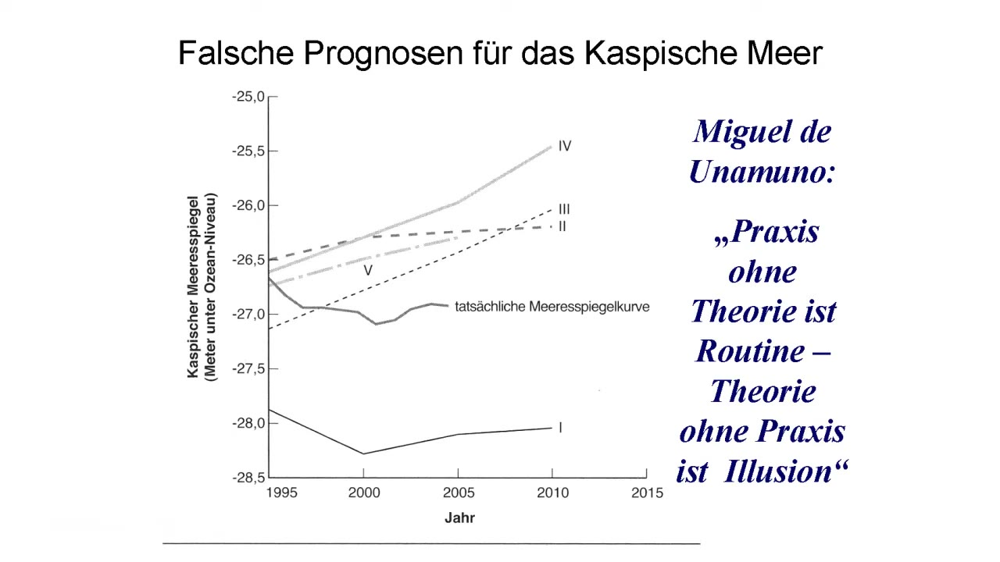
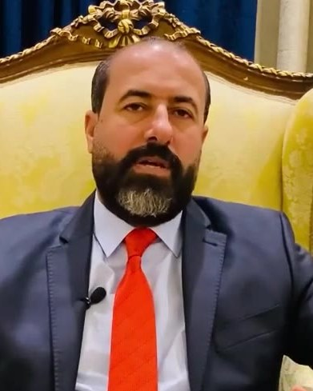
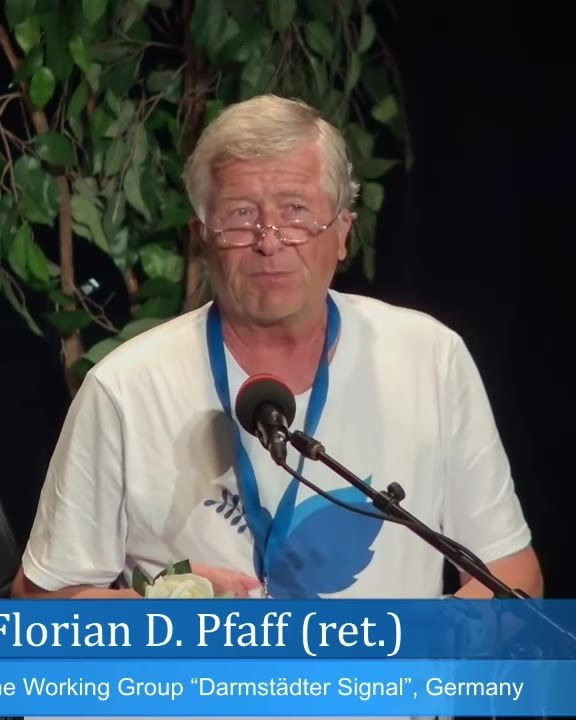
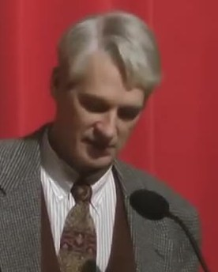
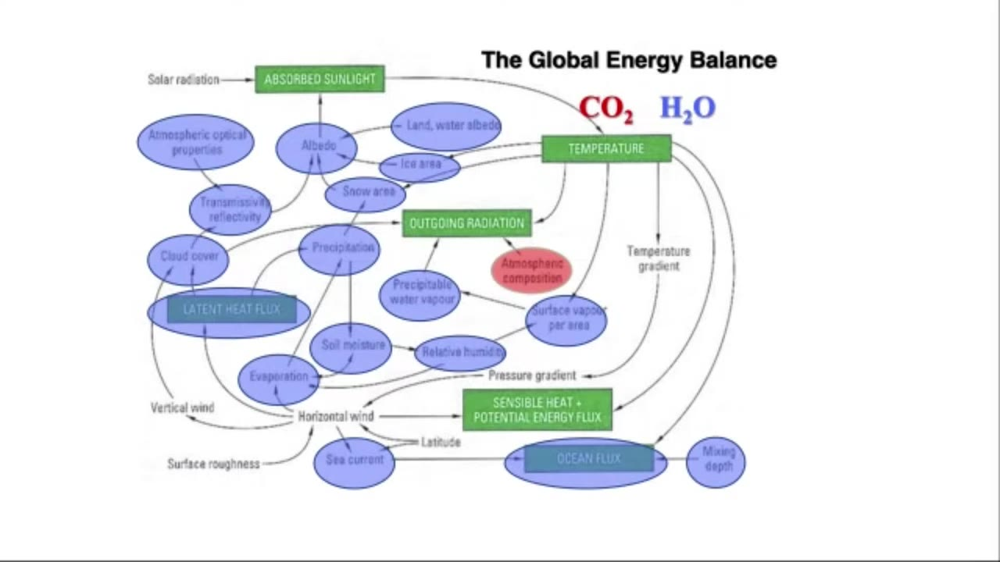
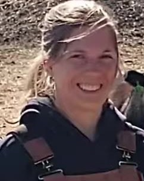
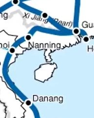

Abbey Makoeabbey-makoe source video ↗ proposedface 8.8% · sharp 121 · 140×175no face detectedno face detectednoneno usable portrait
Achim Bonatzachim-bonatz source video ↗ proposedface 18.6% · sharp 196 · 298×372face 19.4% · sharp 152 · 311×389face 21.8% · sharp 75 · 349×436noneno usable portrait
Alejandro Yayaalejandro-yaya source video ↗ proposedface 56.9% · sharp 8 · 576×720face 53.6% · sharp 10 · 576×720no face detectednoneno usable portrait
Alexander K. Bobrovalexander-k-bobrov source video ↗ proposedface 53.8% · sharp 14 · 576×720face 53.2% · sharp 13 · 576×720face 51.4% · sharp 13 · 576×720noneno usable portrait
Alexey Boguslavskiyalexey-boguslavskiy source video ↗ proposedface 33.8% · sharp 97 · 540×675face 34.0% · sharp 66 · 544×681face 31.9% · sharp 82 · 511×639noneno usable portrait
Amzat Boukari-Yabaraamzat-boukari-yabara source video ↗ no face detectedno face detectedno face detectednoneno usable portrait
Atul Anejaatul-aneja source video ↗ proposedface 48.1% · sharp 27 · 576×720face 44.9% · sharp 24 · 576×720face 42.6% · sharp 18 · 576×720noneno usable portrait
Ben Greenspanben-greenspan-m-d source video ↗ proposedface 33.2% · sharp 47 · 531×664face 14.2% · sharp 18 · 227×283face 13.8% · sharp 21 · 220×275noneno usable portrait
Boris Meshchanovboris-meshchanov source video ↗ proposedface 48.3% · sharp 10 · 576×720face 47.2% · sharp 11 · 576×720face 43.8% · sharp 11 · 576×720noneno usable portrait
Bradley Blankenshipbradley-blankenship source video ↗ proposedface 25.1% · sharp 22 · 402×503face 22.9% · sharp 41 · 367×458face 6.2% · sharp 2176 · 100×125noneno usable portrait
Butch Valdesbutch-valdes source video ↗ proposedface 61.3% · sharp 13 · 576×720face 32.4% · sharp 55 · 518×647no face detectednoneno usable portrait
Caleb Maupincaleb-maupin source video ↗ proposedface 55.6% · sharp 30 · 576×720face 53.8% · sharp 27 · 576×720face 54.7% · sharp 18 · 576×720noneno usable portrait
Chen Xiaohanchen-xiaohan source video ↗ proposedface 21.9% · sharp 107 · 351×439face 21.5% · sharp 88 · 344×431face 16.0% · sharp 156 · 256×319noneno usable portrait
Cornelia Pretoriuscornelia-pretorius source video ↗ proposedface 19.0% · sharp 63 · 304×381face 17.8% · sharp 88 · 284×356face 17.9% · sharp 44 · 287×358noneno usable portrait
Daqi Fandaqi-fan source video ↗ proposedface 15.4% · sharp 101 · 247×308face 15.3% · sharp 109 · 244×306face 15.0% · sharp 83 · 240×300noneno usable portrait
Daud Azimidaud-azimi source video ↗ proposedface 49.2% · sharp 85 · 576×720face 51.8% · sharp 76 · 576×720face 45.6% · sharp 93 · 576×720noneno usable portrait
David Monyaedavid-monyae source video ↗ proposedface 9.0% · sharp 212 · 144×181face 7.8% · sharp 226 · 124×156face 6.8% · sharp 50 · 109×136noneno usable portrait
David T. Pynedavid-t-pyne source video ↗ proposedface 48.8% · sharp 13 · 576×720face 48.3% · sharp 12 · 576×720face 47.8% · sharp 14 · 576×720noneno usable portrait
Ding Yifanding-yifan source video ↗ proposedface 36.7% · sharp 34 · 576×720face 34.3% · sharp 37 · 549×686face 34.4% · sharp 36 · 551×689noneno usable portrait
Ed Calabreseed-calabrese source video ↗ proposedface 11.7% · sharp 908 · 187×233no face detectedno face detectednoneno usable portrait
Elisabeth Murrayelisabeth-murray source video ↗ proposedface 31.8% · sharp 117 · 509×636face 21.4% · sharp 200 · 342×428face 21.7% · sharp 175 · 347×433noneno usable portrait
Elke Fimmenelke-fimmen source video ↗ proposedface 21.1% · sharp 261 · 338×422face 19.6% · sharp 296 · 313×392face 22.2% · sharp 183 · 356×444noneno usable portrait
Emanuel Höheneremanuel-hohener source video ↗ proposedface 59.7% · sharp 22 · 576×720face 48.5% · sharp 12 · 576×720face 38.9% · sharp 66 · 576×720noneno usable portrait
Eva Karene Bartletteva-karene-bartlett source video ↗ proposedface 47.9% · sharp 24 · 576×720face 39.4% · sharp 22 · 576×720face 36.1% · sharp 21 · 576×720noneno usable portrait
Ewertewert source video ↗ proposedface 11.7% · sharp 5 · 187×233no face detectedno face detectednoneno usable portrait
Felipe Maruf Quintasfelipe-maruf-quintas source video ↗ proposedface 45.8% · sharp 14 · 576×720face 42.4% · sharp 12 · 576×720no face detectednoneno usable portrait
Folker Hellmeyerfolker-hellmeyer source video ↗ proposedface 20.8% · sharp 159 · 333×417face 17.4% · sharp 192 · 278×347face 20.1% · sharp 100 · 322×403noneno usable portrait
Franco Battagliafranco-battaglia source video ↗ proposedface 18.1% · sharp 72 · 289×361face 17.5% · sharp 61 · 280×350face 17.9% · sharp 65 · 287×358noneno usable portrait
Fraydique Alexander Gaitánfraydique-alexander-gaitan source video ↗ proposedface 32.1% · sharp 52 · 513×642face 30.6% · sharp 61 · 489×611face 29.6% · sharp 55 · 473×592noneno usable portrait
George Koogeorge-koo source video ↗ proposedface 40.1% · sharp 30 · 576×720face 40.4% · sharp 24 · 576×720face 39.0% · sharp 26 · 576×720noneno usable portrait
Georgy Tolorayageorgy-toloraya source video ↗ proposedface 16.8% · sharp 35 · 269×336face 16.2% · sharp 48 · 260×325face 12.2% · sharp 929 · 196×244noneno usable portrait
Glenn Diesenglenn-diesen source video ↗ proposedface 55.3% · sharp 345 · 576×720face 56.1% · sharp 330 · 576×720face 57.4% · sharp 337 · 576×720noneno usable portrait
Haidar Al-Fuadi Al-Atabehaidar-al-fuadi-al-atabe source video ↗ proposedface 23.8% · sharp 278 · 380×475face 24.9% · sharp 235 · 398×497face 24.4% · sharp 254 · 391×489noneno usable portrait
Hans von Helldorffhans-von-helldorff source video ↗ proposedface 19.0% · sharp 282 · 304×381face 21.0% · sharp 79 · 336×419face 8.6% · sharp 504 · 138×172noneno usable portrait
Horst-Joachim Lüdeckehorst-joachim-ludecke source video ↗ proposedface 56.5% · sharp 56 · 576×720face 54.9% · sharp 30 · 576×720face 46.8% · sharp 40 · 576×720noneno usable portrait
Huang Pinghuang-ping source video ↗ proposedface 45.7% · sharp 59 · 576×720face 44.9% · sharp 52 · 576×720face 44.4% · sharp 54 · 576×720noneno usable portrait
Igor Lopatonokigor-lopatonok source video ↗ proposedface 50.4% · sharp 84 · 576×720face 51.2% · sharp 88 · 576×720face 53.5% · sharp 52 · 576×720noneno usable portrait
Jacques Hogardjacques-hogard source video ↗ proposedface 63.9% · sharp 63 · 576×720no face detectednoneno usable portrait
Jay Naidoojay-naidoo source video ↗ proposedface 17.5% · sharp 39 · 280×350no face detectedno face detectednoneno usable portrait
Jean Christophe Vautrinjean-christophe-vautrin source video ↗ proposedface 23.2% · sharp 63 · 371×464face 23.3% · sharp 44 · 373×467face 21.8% · sharp 43 · 349×436noneno usable portrait
Jérôme Ravenetjerome-ravenet source video ↗ proposedface 75.7% · sharp 26 · 576×720face 66.4% · sharp 7 · 576×720face 65.8% · sharp 7 · 576×720noneno usable portrait
John Gongjohn-gong source video ↗ proposedface 29.2% · sharp 58 · 467×583face 28.3% · sharp 47 · 453×567face 29.6% · sharp 43 · 473×592noneno usable portrait
Justin Yifu Linjustin-yifu-lin source video ↗ proposedface 47.8% · sharp 24 · 576×720face 38.1% · sharp 34 · 576×720face 36.7% · sharp 31 · 576×720noneno usable portrait
Kelvin Kemmkelvin-kemm-ph-d source video ↗ proposedface 52.8% · sharp 9 · 576×720face 48.2% · sharp 8 · 576×720face 46.5% · sharp 9 · 576×720noneno usable portrait
Khadijah Langkhadijah-lang source video ↗ proposedface 55.6% · sharp 14 · 576×720face 15.0% · sharp 418 · 240×300face 17.1% · sharp 3488 · 273×342noneno usable portrait
Kiran Karnikkiran-karnik source video ↗ proposedface 58.9% · sharp 13 · 576×720face 57.2% · sharp 12 · 576×720face 57.1% · sharp 10 · 576×720noneno usable portrait
Lawrence Wilkersonlawrence-wilkerson source video ↗ proposedface 37.9% · sharp 61 · 576×720noneno usable portrait
Liliana Gorinililiana-gorini source video ↗ proposedface 62.5% · sharp 26 · 576×720face 41.4% · sharp 72 · 576×720noneno usable portrait
Major Florian D. Pfaffmajor-florian-d-pfaff source video ↗ proposedface 88.3% · sharp 293 · 576×720face 19.7% · sharp 122 · 316×394face 9.2% · sharp 2649 · 147×183noneno usable portrait
Major General (ret.) Peter Cleggmajor-general-peter-clegg source video ↗ proposedface 65.6% · sharp 13 · 576×720no face detectedno face detectednoneno usable portrait
Mark Shellymark-shelly source video ↗ proposedface 17.2% · sharp 34 · 276×344face 15.0% · sharp 38 · 240×300face 11.8% · sharp 150 · 189×236noneno usable portrait
Megan Dobrodtmegan-dobrodt source video ↗ proposedface 60.0% · sharp 16 · 576×720face 52.8% · sharp 15 · 576×720face 53.2% · sharp 14 · 576×720noneno usable portrait
Michael Limburgmichael-limburg source video ↗ proposedface 25.0% · sharp 44 · 400×500no face detectedno face detectednoneno usable portrait
Mohammed Bilamohammed-bila source video ↗ proposedface 25.4% · sharp 104 · 407×508face 6.1% · sharp 4205 · 98×122no face detectednoneno usable portrait
Nicole Phrangnicole-phrang source video ↗ proposedface 15.1% · sharp 603 · 242×303face 11.8% · sharp 56 · 189×236face 11.8% · sharp 50 · 189×236noneno usable portrait
Nuraly Bekturganovnuraly-bekturganov source video ↗ proposedface 13.2% · sharp 298 · 211×264face 7.8% · sharp 6718 · 124×156face 6.9% · sharp 1042 · 111×139noneno usable portrait
Pakdee Tanapurapakdee-tanapura source video ↗ proposedface 54.3% · sharp 76 · 576×720face 59.4% · sharp 47 · 576×720face 12.1% · sharp 4720 · 193×242noneno usable portrait
Pedro Rubiopedro-rubio source video ↗ proposedface 22.4% · sharp 10 · 358×447no face detectedno face detectednoneno usable portrait
Petr Iliichevpetr-iliichev source video ↗ proposedface 17.1% · sharp 96 · 273×342no face detectedno face detectednoneno usable portrait
PLO Lumumbaplo-lumumba source video ↗ proposedface 18.1% · sharp 121 · 289×361face 15.8% · sharp 21 · 253×317no face detectednoneno usable portrait
Princy Mthombeniprincy-mthombeni source video ↗ proposedface 48.9% · sharp 79 · 576×720face 47.5% · sharp 84 · 576×720face 44.3% · sharp 97 · 576×720noneno usable portrait
Robert Cushingrobert-cushing source video ↗ proposedface 48.6% · sharp 20 · 576×720face 32.4% · sharp 18 · 518×647face 8.1% · sharp 1470 · 129×161noneno usable portrait
Rubén Guzzettiruben-guzzetti source video ↗ proposedface 77.9% · sharp 14 · 576×720face 69.6% · sharp 9 · 576×720face 65.3% · sharp 11 · 576×720noneno usable portrait
Saeed Naqvisaeed-naqvi source video ↗ proposedface 44.9% · sharp 24 · 576×720face 47.2% · sharp 21 · 576×720face 43.1% · sharp 26 · 576×720noneno usable portrait
Shakeel Ahmad Ramayshakeel-ahmad-ramay source video ↗ proposedface 9.6% · sharp 586 · 153×192face 9.4% · sharp 588 · 151×189face 9.4% · sharp 626 · 151×189noneno usable portrait
Simon Levysimon-levy source video ↗ proposedface 53.8% · sharp 14 · 576×720face 51.9% · sharp 16 · 576×720face 52.2% · sharp 14 · 576×720noneno usable portrait
Sultan M. Halisultan-m-hali source video ↗ proposedface 32.9% · sharp 112 · 527×658face 32.6% · sharp 109 · 522×653face 32.1% · sharp 92 · 513×642noneno usable portrait
Vassily A. Nebenziavassily-a-nebenzia source video ↗ proposedface 29.6% · sharp 38 · 473×592face 29.2% · sharp 37 · 467×583face 28.5% · sharp 36 · 456×569noneno usable portrait
Vladimir Morozovvladimir-morozov source video ↗ proposedface 19.2% · sharp 428 · 307×383face 20.7% · sharp 121 · 331×414face 15.8% · sharp 286 · 253×317noneno usable portrait
Walter Faggettwalter-faggett source video ↗ proposedface 49.6% · sharp 133 · 576×720face 66.1% · sharp 33 · 576×720face 56.0% · sharp 24 · 576×720noneno usable portrait
Wang Haowang-hao source video ↗ proposedface 21.8% · sharp 117 · 349×436face 20.4% · sharp 105 · 327×408face 21.5% · sharp 75 · 344×431noneno usable portrait
Wang Wenwang-wen source video ↗ proposedface 40.4% · sharp 38 · 576×720face 41.2% · sharp 26 · 576×720face 39.0% · sharp 26 · 576×720noneno usable portrait
Wolfgang Effenbergerwolfgang-effenberger source video ↗ proposedface 21.2% · sharp 143 · 340×425face 21.1% · sharp 124 · 338×422face 21.0% · sharp 73 · 336×419noneno usable portrait
Xu Jianxu-jian source video ↗ proposedface 9.3% · sharp 435 · 149×186no face detectedno face detectednoneno usable portrait
Yusuf Maitama Tuggaryusuf-maitama-tuggar source video ↗ proposedface 22.8% · sharp 66 · 364×456face 19.4% · sharp 75 · 311×389face 18.2% · sharp 59 · 291×364noneno usable portrait
Zaid Ayoub Arbachezaid-ayoub-arbache source video ↗ proposedface 37.1% · sharp 124 · 576×720face 35.4% · sharp 127 · 567×708face 36.1% · sharp 76 · 576×720noneno usable portrait